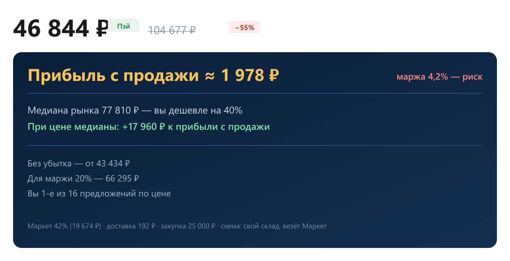
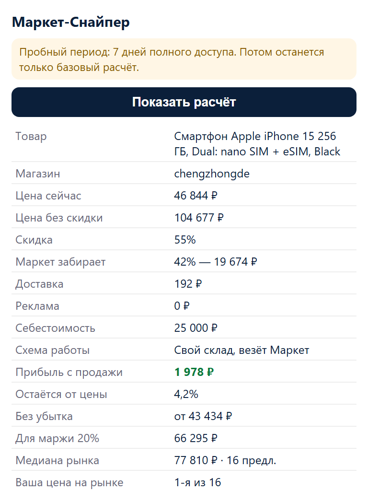

Прибыль с продажи — прямо на карточке Маркета
Расширение считает, сколько вы реально заработаете с товара: минус комиссия Маркета, доставка, реклама и закупка. Прямо на странице — без таблиц и калькуляторов.

Что вы видите на карточке
Плашка под ценой и подробный расчёт в окне расширения. Все цифры — на русском, без аббревиатур.
Прибыль сразу
Из цены вычитаются комиссия Маркета, доставка, реклама и закупка. Видно и сумму, и сколько процентов цены остаётся вам.
Тарифы как у Маркета
Кнопка «Тариф Маркета» подставляет официальный процент по категории (32–53%) и оценку доставки.
Понятно без обучения
Вместо FBY/FBS/DBS — «товар на складе Маркета», «свой склад, доставка Маркета», «свой склад и своя доставка».

Показаны первые строки расчёта. Открыть окно расширения целиком
Как работает
Три шага, ничего настраивать не нужно.
Установите расширение
Скачайте архив и подключите его в Edge. Инструкция — ниже, занимает минуту.
Откройте карточку товара
На любой странице товара под ценой появится плашка с чистой прибылью.
Подставьте свои ставки
В окне расширения укажите категорию, доставку и рекламу — расчёт пересчитается сразу.
Цена
Начинаем с минимальной цены: чем больше продавцов пользуется, тем быстрее появляются новые функции. Купившим сейчас цена не повышается.
Месяц
- Расчёт по тарифам Маркета
- Свои доставка и реклама
- Работает офлайн
- Ключ активируется за минуту
Установка
Пока каталог не открыт, расширение ставится вручную — как любой внутренний инструмент.
Скачайте и распакуйте
market-sniper-0.4.2.zip → распакуйте в постоянную папку, например D:\market-sniper.
Откройте расширения
В адресной строке: edge://extensions (или chrome://extensions) → включите «Режим разработчика».
Загрузите папку
«Загрузить распакованное» → выберите папку, куда распаковали архив (внутри должен лежать manifest.json).
После установки откройте любую карточку товара на market.yandex.ru — плашка появится под ценой. Если нет: нажмите «Обновить» у расширения и перезагрузите страницу.
Частые вопросы
Нужно ли ИП или регистрация?
Для установки — нет. Покупка оформляется как обычная услуга, чек приходит от самозанятого. Данные карты мы не храним.
Какие данные вы собираете?
Расчёт и настройки расширения хранятся только в браузере — на сервер уходит лишь запрос при активации ключа, чтобы проверить его срок. На этом сайте работает Яндекс.Метрика: обезличенная статистика посещений и кликов, без передачи данных о ваших товарах. Подробнее — в политике конфиденциальности.
Работает ли без интернета?
Да. Ключ проверяется по подписи локально, поэтому расчёт прибыли работает и при плохой связи.
Что будет, когда закончится пробный период?
Расширение не отключится: останется базовый расчёт по ставке 42% и доставке 100 ₽ плюс поле для ключа. После оплаты всё возвращается, настройки не теряются.
Если не подошло — вернёте деньги?
Да, в течение 7 дней после оплаты. Напишите на почту из реквизитов — вернём тем же способом, ключ аннулируем.
Поддерживается ли Яндекс.Браузер?
Да, он на том же движке: browser://extensions → «Режим разработчика» → «Загрузить распакованное».